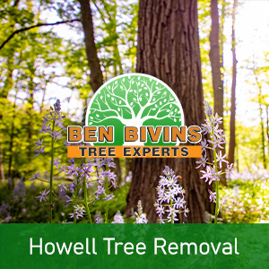
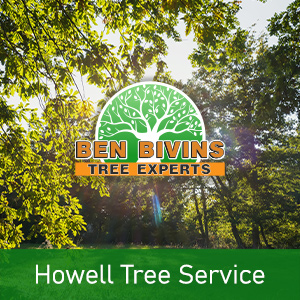

If you and your family need tree removal in Howell or tree service in Howell, Ben Bivins Tree Experts has you covered. Our company has been delivering top-notch tree service to your town for many years.
About Howell Tree Removal

Have you got lifeless or unpleasant trees which should be removed? Tree removal can be a high risk task that requires the proper equipment and safety standards. Even though it may be appealing to eliminate a tree yourself from your property, it may be a choice that puts someone at risk, without having the appropriate training. There can be many reasons why you are considering a tree removal in Howell:- Tree is hindering too much sunlight in your yard
- Tree is deceased or detrimental and a possible safety risk
- Tree is too big and presents a threat if large branches drop
- Tree was harmed during a storm and is past the level of salvaging
- You are considering renovations that will ultimately harm the trees
- Tree is dropping a great number of limbs, leaves, or pine needles
We are a fully insured and licensed tree company. Never assume the associated risk of using an uninsured tree removal company or depending upon a friend or family member to do this sort of job. Our crew is professionally qualified and our company holds the proper qualifications to ensure your Howell tree removal will be performed in the safest and most efficient possible way. Tree removal requires the use of heavy machinery and hazardous equipment which should only be left to the pros. Leave it to the specialists! Call today for an estimate for your Howell tree removal.
In search of Howell NJ Tree Service?

We carry out all aspects of Howell tree service. A few of these services include:- Tree Trimming – Is a tree in your yard growing uncontrollably? Is your property in short supply of sunlight on account of an overgrown tree? Trimming a tree’s branches can make a big difference and could allow you to keep a tree you in any other case considered getting rid of.
- Pruning – Keep the trees happy and healthful. Pruning involves assessing a tree’s health and making a decision to eliminate limbs selectively to optimize its health and sustainability.
- Crown Reduction – We can reduce the scale of your tree’s cover using this method. Our team will evaluate your tree and make recommendations to take out certain limbs which will cut back canopy cover.
- Emergency Tree Service – Have you got a downed tree that requires speedy attention? Is there a tree which is on the verge of causing destruction if it is not addressed right away? You may be a prospect for emergency tree service.
If you’re a Howell homeowner in need of tree service, Contact us today. Appointment time varies based on weather, season and our current work load. We will provide you with an estimate and inform you of date ranges available for service after evaluating your particular job.
Your Source for Howell Firewood
It’s no surprise that a Howell tree removal business may have an excess supply of firewood! If you are on the lookout for firewood for a wood burning stove or fireplace, call us. Firewood supply availability can vary all through the year.